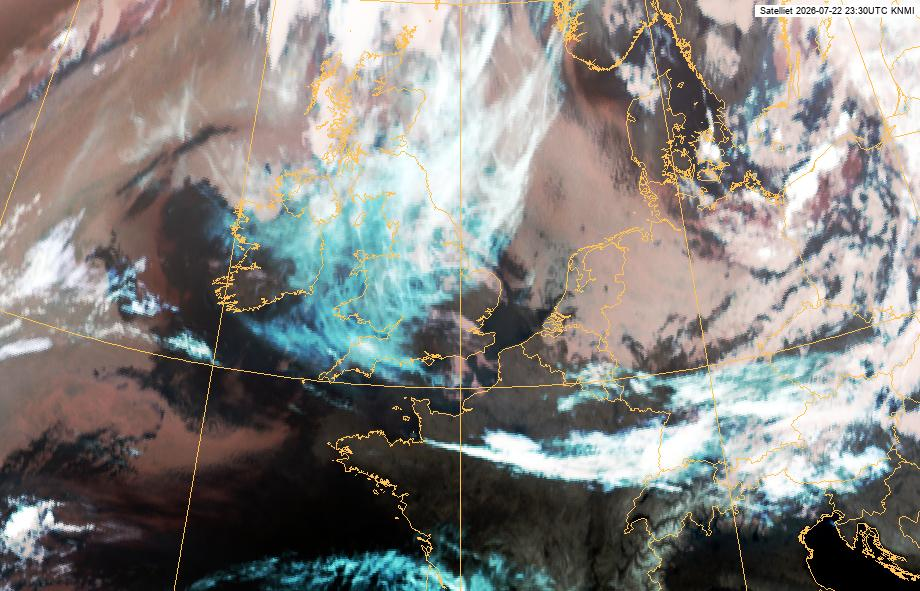

🌦️ Weeroverzicht — De Bilt
Gegenereerd op 23-07-2026 00:16 · bron: KNMI / Weerlive.nl
📊 Actuele data
🌡️ Temperatuur
16.3°C
💦 Dauwpunt
11.5°C
💧 Luchtvochtigheid
73%
🥶 Gevoelstemperatuur
16.3°C
🧭 Windrichting
NNW
🧭 Windrichting
314.5°
💨 Windsnelheid
1.36m/s
💨 Windkracht
1Bft
📊 Luchtdruk
1022.02hPa
👁️ Zicht
40700m
☀️ Zonnestraling
0W/m²
☁️ Weersgesteldheid
Zwaar bewolkt
🌅 Zon op
05:45
🌇 Zon onder
21:46
• time
23-07-2026 02:08:03
⚠️ Waarschuwing nu
Op dit moment geen actieve KNMI-waarschuwing.
🔜 Aankomende waarschuwing
Geen bekende aankomende waarschuwing.
🌡️ Tmin / Tmax (24u)
Tmin (24u)
16.3°C
16.3°C
Tmax (24u)
18.8°C
18.8°C
Metingen
9
9
📋 Waarschuwingen (24u historie)
Geen waarschuwingen in de afgelopen 24 uur (eigen metingen).
🛰️ Satellietbeeld

🔁 Satellietloop (6u)